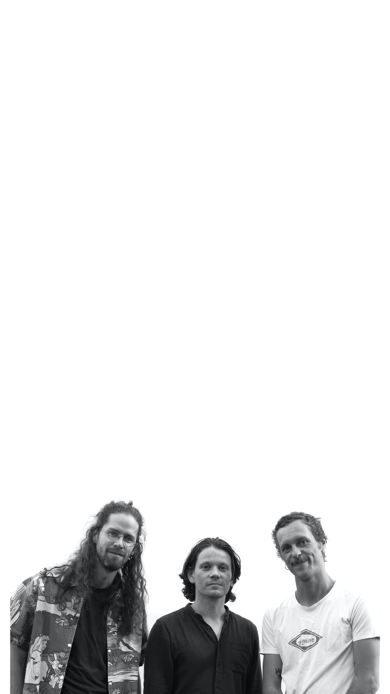

L’équipe TEPHRA s’est construite au gré des rencontres, notamment, à l’Ecole Nationale d’Architecture de Montpellier. Cette association est issue d’une appétence pour la recherche en architecture et par une volonté profonde de travailler ensemble au travers de valeurs communes. Elle développe ses travaux au croisement de différentes spécialités, plaçant l’architecture comme socle vivant de la réflexion.
L’interdisciplinarité, l’échange et le dialogue fondent le guide des projets proposées. Elles se situent dans un champ comprenant des créations sculpturales, architecturales, scénographiques, environnementales et sensitives. Elles s’inspirent des élements contextuels et portent un regard appuyé sur la localité, ses acteurs naturels et humains.
Cette fusion de différents médias de création enrichit les propositions, et forge, projet après projet l’identité affirmée de cette structure. Ce cheminement façonne des projets aboutis, rigoureux et de caractère.
Fabrice Henry, Architecte DE
Constructeur
Bijoutier
Diplômé de l’ENSA Montpellier en 2017, Fabrice Henry développe une pratique transversale entre architecture, design et fabrication manuelle. Travaillant avec une ressourcerie locale, il explore le réemploi des matériaux à travers la création de mobilier et de bijoux. Il cofonde Studio Tephra et encadre des workshops de construction de micro-architecture en France et aux Caraïbes (lauréat et / ou primé : Ordre Archi LR, Polyculture, Festival des Cabanes, Matjoukann).
Mathieu Nouhen, Architecte HMONP
Constructeur
Enseinant
Artiste plasticien
Diplômé de l’ENSA Montpellier en 2016, Mathieu Nouhen développe une pratique centrée sur l’architecture éphémère et la recherche matérielle. Auteur de plusieurs oeuvres a la frontière de l’architecture et du land art, il confonde par la suite Studio tephra pour explorer les qualités sensibles des matériaux dans des contextes temporaires et expérimentaux. (lauréat et / ou primé : Ordre Archi LR, Buildner, TerraViva, Matjoukann, Polyculture, Festival des Cabanes, Horizon Sancy, Europan).
Quentin Jousselme, Architecte HMONP
Constructeur
Concepteur permaculture
Musicien
Diplômé de l’ENSA Montpellier en 2016, et titulaire d’un master en art et architecture, Quentin Jousselme cofonde Studio Tephra et ouvre son atelier d’architecture en Colombie. Titulaire d’une certification en conception den permaculture, il devoloppe depuis Santa Marta une expertise en architecture tropicale et représente Studio Tephra en amérique latine, ancrant la démarche du studio dans des territoires et des savoir-faire nouveaux. (lauréat et / ou primé : Ordre Archi LR, Matjoukann).
The TEPHRA team was built through various encounters, particularly at the National School of Architecture in Montpellier. This association stems from a keen interest in architectural research and a deep desire to work together through shared values. It develops its work at the intersection of different specialties, placing architecture as the living foundation of reflection.
Interdisciplinarity, exchange, and dialogue form the guiding principles of the proposed projects. These projects span a range of fields, including sculptural, architectural, scenographic, environmental, and sensory creations. They draw inspiration from contextual elements and take a close look at the locality, its natural and human actors.
This fusion of different creative media enriches the proposals and, project after project, forges the distinctive identity of this organization. This journey shapes projects that are accomplished, rigorous, and full of character.
Fabrice Henry, Architect
Builder
Jeweler
Graduated from ENSA Montpellier in 2017, Fabrice Henry has developed a cross-disciplinary practice spanning architecture, design and handcraft. Working with a local resource and reuse center, he explores material repurposing through the creation of furniture and jewelry. He co-founded Studio Tephra and leads micro-architecture construction workshops in France and the Caribbean. (laureate and/or award winner: Ordre Archi LR, Polyculture, Festival des Cabanes, Matjoukann)
Mathieu Nouhen,Licenced Architect
Builder
Teacher
Artist
Graduated from ENSA Montpellier in 2016, Mathieu Nouhen has developed a practice centered on ephemeral architecture and material research. Author of several works at the intersection of architecture and land art, he later co-founded Studio Tephra to explore the sensory qualities of materials in temporary and experimental contexts. (laureate and/or award winner: Ordre Archi LR, Buildner, TerraViva, Matjoukann, Polyculture, Festival des Cabanes, Horizon Sancy, Europan)
Quentin Jousselme, Licenced Architect
Builder
Certified in permaculture design
Musician
Graduated from ENSA Montpellier in 2016 and holding a master's degree in art and architecture, Quentin Jousselme co-founded Studio Tephra and opened his architecture workshop in Colombia. Holding a certification in permaculture design, he has been developing expertise in tropical architecture from Santa Marta, and represents Studio Tephra in Latin America, grounding the studio's approach in new territories and new areas of expertise. (laureate and/or award winner: Ordre Archi LR, Matjoukann)
El equipo TEPHRA se construyó a lo largo de los encuentros, especialmente en la Escuela Nacional de Arquitectura de Montpellier. Esta asociación surge de un apetito por la investigación en arquitectura y de una profunda voluntad de trabajar juntos a través de valores comunes. Desarrolla sus trabajos en la intersección de diferentes especialidades, situando la arquitectura como base viva de la reflexión.
La interdisciplinariedad, el intercambio y el diálogo constituyen la guía de los proyectos propuestos. Estos se sitúan en un campo que comprende creaciones escultóricas, arquitectónicas, escenográficas, medioambientales y sensitivas. Se inspiran en los elementos contextuales y ponen una mirada profunda sobre la localidad, sus actores naturales y humanos.
Esta fusión de diferentes medios de creación enriquece las propuestas y forja, proyecto tras proyecto, la identidad afirmada de esta estructura. Este recorrido da forma a proyectos acabados, rigurosos y con carácter.
Fabrice Henry, Arquitecto DE
Constructor
Joyero
Graduado de la ENSA Montpellier en 2017, Fabrice Henry desarrolla una práctica transversal entre arquitectura, diseño y fabricación artesanal. Trabajando con un centro local de reutilización de materiales, explora el reempleo a través de la creación de mobiliario y joyería. Cofunda Studio Tephra y coordina talleres de construcción de micro-arquitectura en Francia y el Caribe. (laureado y/o premiado: Ordre Archi LR, Polyculture, Festival des Cabanes, Matjoukann)
Mathieu Nouhen, Arquitecto licenciado
Constructor
Docente
Artista plástico
Graduado de la ENSA Montpellier en 2016, Mathieu Nouhen desarrolla una práctica centrada en la arquitectura efímera y la investigación material. Autor de varias obras en la frontera entre la arquitectura y el land art, cofunda posteriormente Studio Tephra para explorar las cualidades sensibles de los materiales en contextos temporales y experimentales. (laureado y/o premiado: Ordre Archi LR, Buildner, TerraViva, Matjoukann, Polyculture, Festival des Cabanes, Horizon Sancy, Europan)
Quentin Jousselme, Arquitecto licenciado
Constructor
Certificado en diseño de permacultura
Músico
Graduado de la ENSA Montpellier en 2016 y titulado con un máster en arte y arquitectura, Quentin Jousselme cofunda Studio Tephra y abre su estudio de arquitectura en Colombia. Con una certificación en diseño de permacultura, desarrolla desde Santa Marta una experiencia en arquitectura tropical y representa a Studio Tephra en América Latina, arraigando el enfoque del estudio en nuevos territorios y nuevos saberes. (laureado y/o premiado: Ordre Archi LR, Matjoukann)